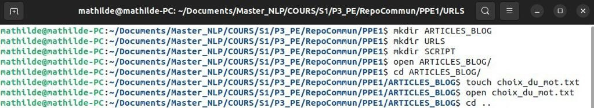
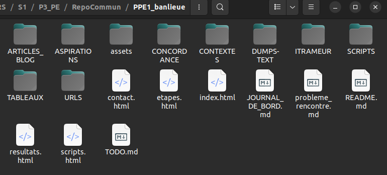

Huitième étape : Arborescence du projet et création du site
Nous avons créé notre projet grâce aux commandes du terminal, telles que "mkdir", "cd", "touch", comme ceci :

L'arborescence du projet est d'autant plus importante que le site est intégré à l'aide de github.
La racine de notre projet se compose donc de 10 dossiers et 9 fichiers.

Les fichiers Markdown
Les fichiers en format markdown sont les fichiers utiles pour notre dépôt git. Le README.md est une présentation générale et succinte du projet ; le JOURNAL_DE_BORD.md présente notre démarche semaine après semaine ; TODO.md est notre todo list ; probleme_rencontre.md est un récapitulatif des problèmes rencontrés et des solutions trouvées.
Les fichiers HTML
Les fichiers HTML servent à la construction du site, ainsi que le dossier "assets", qui contient nos fichiers CSS et nos images.
Le fichier index.html est la page qui s'affiche automatiquement lorsque nous accédons au site par l'url : "https://mathildech.github.io/PPE1_banlieue".
C'est donc la page d'accueil de notre site.
Les autres fichiers HTML présents à la racine du projet sont les pages qui composent le menu du site : etapes.html, scripts.html, resultats.html, contact.html.
Le menu est également composé de la page des tableaux, qui se trouve dans le dossier TABLEAUX/index.html. Cette page recense les 4 tableaux HTML concernant les 4 langues étudiées, créé à partir du script bash principal (squelette_script.sh).
Ensuite, le dossier ARTICLES_BLOG contient tous les fichiers html de nos articles (soit 17).
Le reste du projet
Le dossier URLS a été créé en premier, il rassemble nos corpora d'urls, matière première de notre projet.
Le dossier SCRIPTS contient 3 scripts bash et un script python, responsables de la création des autres dossiers. Le script squelette_script.sh, le script principal, permet la création du dossier TABLEAUX et des tableaux HTML avec les colonnes correspondantes aux dossiers CONTEXTES, DUMPS-TEXT, ASPIRATIONS (dump HTML).
Le script make_itrameur_corpus.sh mène à la création du dossier ITRAMEUR.
Le script concordances.sh créé le dossier CONCORDANCES.
Enfin, le script python wordcloud_script_python.py permet de générer le nuage de mot qui sera intérprété lors des résultats.
LE SITE
Comme créer un site est une tâche longue et ardue pour des débutants, nous avons choisi de passer par une template bootstrap, car personne dans l'équipe n'est adepte du design graphique.
Nous avons cependant enrichi le site de notre touche personnelle.
Le design du site est donc simple, la palette de couleur est noir, blanc, gris et jaune.
Le site est responsive et le menu se compresse en un dropdown menu à partir d'une certaine taille d'écran.
Nous utilisons la flexbox pour positionner les élèments.
Nous avons essayé de rendre la navigation la plus simple possible en intégrant un header et un footer à chaque page et chaque article ; une pagination à la fin de chaque article ainsi qu'une sticky note qui mène vers encore plus d'articles.
Ainsi, l'utilisateur peut toujours se repérer et naviguer vers du nouveau contenu.
La structure du site apparaît également pour la page des tableaux HTML, cependant, elle n'apparaît pas pour le contenu des colonnes de ces tableaux.
Chaque étape du projet représente un article de notre blog.